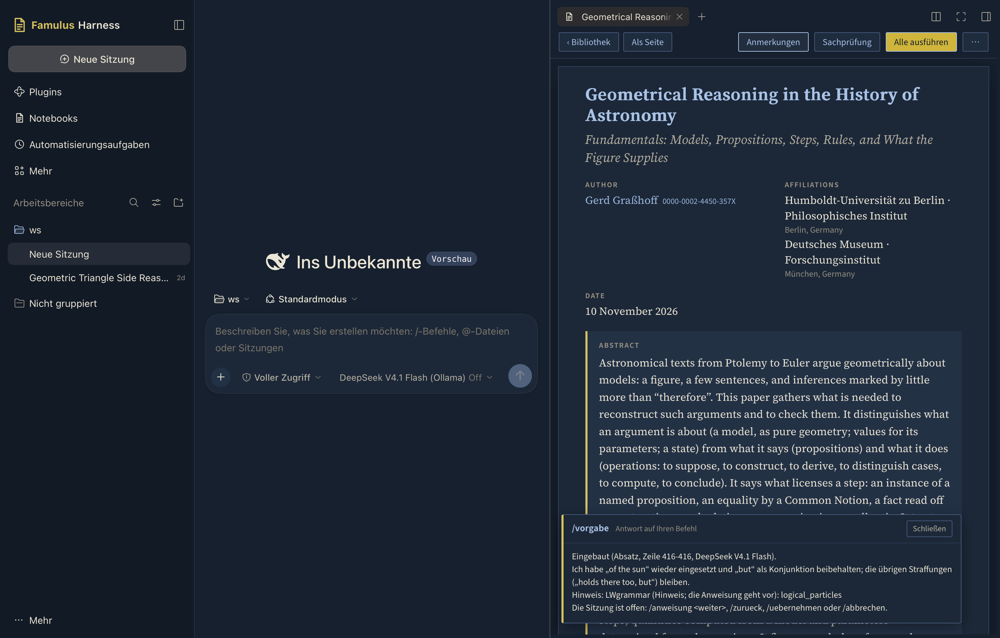
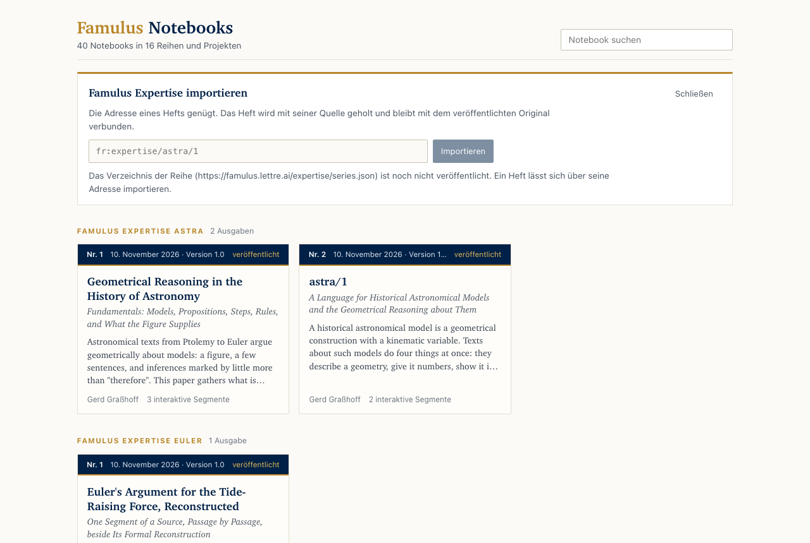

Im Famulus Harness steht ein Notebook neben dem Gespräch mit Famulus. Das Notebook wird gelesen wie eine Veröffentlichung, am Ort bearbeitet und gerechnet; Famulus liest mit, schreibt auf Wunsch hinein und zeigt, was es geändert hat. Jede Aussage des Notebooks bleibt mit ihren Belegen verbunden.
In Famulus Harness a notebook stands beside the conversation with Famulus. The notebook reads like a publication, is edited in place and run; Famulus reads along, writes into it when asked and shows what it changed. Every statement of the notebook stays tied to its evidence.
Ein Programm für macOS · Plugin 0.7.0 · Verlag OpenScienceTechnology
A program for macOS · plugin 0.7.0 · published by OpenScienceTechnology

Gespräch und Notebook nebeneinander. Unten die Antwort auf den Befehl /vorgabe: eine Vorgabe des Lektors wurde auf einen Absatz angewandt, geprüft und eingebaut. Das Harness ist auf DeepSeek Harness aufgebaut; die Notebook-Seite, die Werkzeuge und die Befehle bringt das Famulus-Plugin mit.Conversation and notebook side by side. Below, the answer to the command /vorgabe: a preset of the Lektor was applied to a paragraph, checked and built in. The harness is built on DeepSeek Harness; the notebook page, the tools and the commands come with the Famulus plugin.
Was das Harness istWhat the harness is
Ein Notebook in Famulus ist ein Text mit Zellen: Jede Zelle stellt eine Frage an einen Bestand, wird gerechnet und an einer Erwartung geprüft. Das Harness ist der Ort, an dem ein solches Notebook im Gespräch entsteht.
A notebook in Famulus is a text with cells: each cell puts a question to a holding, is run and is checked against an expectation. The harness is the place where such a notebook is written in conversation.
Notebook neben dem Gespräch
Notebook beside the conversation
Jede Sitzung hat ihr Notebook. Es öffnet sich neben dem Gespräch, sobald die Sitzung geöffnet wird oder Famulus ein Notebook liest oder anlegt. Was Famulus schreibt, erscheint ohne Neuladen.
Every session has its notebook. It opens beside the conversation when the session is opened or when Famulus reads or creates a notebook. What Famulus writes appears without a reload.
Famulus mit Werkzeugen
Famulus with tools
32 Werkzeuge für Notebooks und 6 für Famulus-Referenzen: lesen, Ergebnisse und Gründe ansehen, prüfen, schreiben, rechnen, zeigen. Vor jedem Schreiben und jedem Lauf fragt das Harness nach.
32 tools for notebooks and 6 for Famulus references: reading, looking at results and grounds, checking, writing, running, showing. Before every write and every run the harness asks.
Eine eigene Instanz
An instance of its own
Das Harness läuft als eigenes Programm mit eigenen Sitzungen und Einstellungen. Notebooks liegen als Dateien im Format .fam in Projektordnern; derselbe Notebook-Dienst bedient das Harness, den Browser und den Editor.
The harness runs as a program of its own, with its own sessions and settings. Notebooks are files in the format .fam in project folders; the same notebook service serves the harness, the browser and the editor.
Notebooks lesenReading notebooks
Die Bibliothek zeigt alle Notebooks: die Hefte einer Reihe als Karten, dann die Projekte. Ein Notebook öffnet sich in der Form, in der eine Veröffentlichung gelesen wird.
The library shows all notebooks: the issues of a series as cards, then the projects. A notebook opens in the form in which a publication is read.
Titelkopf mit Autorinnen und Autoren, Zugehörigkeit, Datum, Zusammenfassung und Schlagwörtern; nummerierte Abschnitte.A title block with authors, affiliations, date, abstract and keywords; numbered sections.
Abbildungen, Tabellen und Listings mit Nummer und Unterschrift; Querverweise darauf sind aufgelöst.Figures, tables and listings with number and caption; cross-references to them are resolved.
Zitate aus der Literaturdatei des Projekts mit Literaturverzeichnis am Ende.Citations from the project's bibliography, with the list of references at the end.
Zellen mit ihrem Ergebnis in der passenden Form: Kennzahl, Liste, Tabelle, Belegliste, Textkarten, Netz.Cells with their result in the fitting form: figure, list, table, list of evidence, text cards, network.
Interaktive Segmente der Famulus-Experten, etwa aus der Astronomie: eine Animation eines Modells, ein Argument Schritt für Schritt, eine Darstellung in Stufen.Interactive segments of the Famulus experts, for instance from astronomy: an animation of a model, an argument step by step, an exposition in stages.

Die Bibliothek: Hefte einer Reihe als Karten, darüber der Import von Famulus Expertise.The library: the issues of a series as cards, above them the import of Famulus Expertise.
Bearbeiten und RechnenEditing and running
Ein Notebook wird an derselben Stelle bearbeitet, an der es gelesen wird, von Hand oder durch Famulus. Jedes Segment – Absatz, Tabelle, Abbildung, Zelle, Animation – hat einen Anker; er öffnet das Fenster des Segments mit allem, was sich damit tun lässt.
A notebook is edited at the place where it is read, by hand or by Famulus. Every segment – paragraph, table, figure, cell, animation – has one anchor; it opens the window of the segment with everything that can be done with it.
Am Ort bearbeiten
Editing in place
Ein Absatz, eine Tabelle, eine Bildunterschrift oder eine Zelle wird zu ihrem Quelltext und zeilengenau zurückgeschrieben. Nichts wird geschrieben, wenn die Datei inzwischen geändert wurde oder das Notebook danach nicht mehr lesbar wäre.
A paragraph, a table, a caption or a cell turns into its source text and is written back line by line. Nothing is written when the file has changed meanwhile or the notebook would no longer be readable.
Anweisung am Segment
An instruction on a segment
Eine Anweisung in Worten genügt. Famulus setzt sie um, prüft das Ergebnis und baut es sofort in den Text ein; die Sitzung bleibt für die nächste Anweisung offen, bis übernommen oder abgebrochen wird. Ein Abbruch stellt den Zustand davor her, Byte für Byte. Fehlt der Anweisung etwas, ändert Famulus nichts und nennt, was fehlt.
An instruction in words suffices. Famulus carries it out, checks the result and builds it into the text at once; the session stays open for the next instruction until it is accepted or aborted. An abort restores the state before, byte for byte. When the instruction lacks something, Famulus changes nothing and names what is missing.
Vorgaben
Presets
Fertig formulierte Anweisungen, nach Gruppen: die des Notebooks (Sprache, Kürzen, Präzisieren, für Nicht-Fachleute, Frage schärfen) und die des Lektors (Revision, Sprache, Terminologie, Argument, Apparat). Eigene Worte ergänzen eine Vorgabe. Was sie zu erhalten verspricht – Verweise, Zitate, Zahlen, Formeln –, wird am Ergebnis geprüft.
Instructions that are already worded, by group: the notebook's own (language, shorten, make precise, for non-specialists, sharpen the question) and the Lektor's (revision, language, terminology, argument, apparatus). The author's own words add to a preset. What it promises to keep – references, citations, numbers, formulas – is checked on the result.
Animationen und neue Modelle
Animations and new models
Was ein Segment aus dem Paket astra zeigt, lässt sich per Anweisung ändern: eine Sichtlinie, eine in Stufen kommentierte Animation. Das Paket bleibt unberührt; es entsteht ein eigener Text des Projekts. Ebenso entsteht ein neues Modell mit Überlagerung, Werten und Abbildung – jeder Text vom Prüfer der Sprache geprüft, bevor er erscheint. Für ein Modell ohne Beleg schreibt Famulus nichts und fragt nach der Stelle.
What a segment shows from the package astra can be changed by an instruction: a line of sight, an animation commented in stages. The package stays untouched; a text of the project's own arises. A new model with its superposition, values and figure arises in the same way – every text checked by the language's checker before it appears. For a model without a witness Famulus writes nothing and asks for the passage.
Importe und Pakete
Imports and packages
Ein Projekt nennt in seiner Projektdatei, was es von außen nutzt: Notebooks anderer Projekte, Hefte der Reihe Famulus Expertise und Pakete von Famulus-Experten, etwa fr:astra/solar. Genau das steht ihm zur Verfügung; alles andere ist eine benannte Lücke. Ändert sich ein importierter Text, gelten die Segmente, die auf ihm beruhen, als veraltet, bis der neue Stand bestätigt ist.
A project names in its project file what it uses from elsewhere: notebooks of other projects, issues of the series Famulus Expertise and packages of Famulus experts, for instance fr:astra/solar. Exactly that is available to it; everything else is a named gap. When an imported text changes, the segments resting on it count as stale until the new state is confirmed.
Famulus schreibt mit
Famulus writes along
Famulus ändert eine Stelle wörtlich, schreibt Zellen und Abschnitte, legt Notebooks an und fügt Referenzen ein. Jede Änderung wird vorher in einem Satz genannt und erst nach Zustimmung ausgeführt.
Famulus changes a passage word by word, writes cells and sections, creates notebooks and inserts references. Every change is named in one sentence beforehand and carried out only after consent.
Rechnen und prüfen
Running and checking
Zellen laufen einzeln oder alle veralteten zusammen, Erzeuger zuerst. Jede Zelle zeigt ihren Stand: bestanden, abweichend, Lücke oder Fehler. Zu einer Antwort lassen sich die Gründe als Baum öffnen. Zellen rechnen auch mit importierten Modellen: die Schritte einer Herleitung, die Prüfstufen der Texte, die Örter zweier Punkte über einen Umlauf, je als Tabelle mit Messwerten.
Cells run one by one or all stale ones together, producers first. Every cell shows its state: passed, deviating, gap or error. The grounds of an answer open as a tree. Cells also compute with imported models: the steps of a derivation, the levels the texts reach, the places of two points over a revolution, each as a table with counted values.
Versionen und Rücknahme
Versions and take-back
Jeder Stand eines Notebooks wird festgehalten, wer auch immer geschrieben hat: die Hand, Famulus, eine übernommene Fassung, ein Programm außerhalb. Zu jedem Absatz gibt es den Verlauf; jede Änderung lässt sich zurücknehmen, und die Rücknahme ist selbst ein Stand.
Every state of a notebook is kept, whoever wrote it: the hand, Famulus, an accepted revision, a program outside. Every paragraph has its history; every change can be taken back, and the take-back is itself a state.
Befehle im Gespräch
Commands in the conversation
/notebook wählt das Notebook der Sitzung, /status zeigt den Stand der Zellen, /run rechnet, /gruende zeigt die Begründung einer Zelle. /anweisung und /vorgabe geben einem Segment eine Anweisung, /zurueck, /uebernehmen und /abbrechen führen die Sitzung, /importe zeigt die Importe. Die Antwort steht im Notebook-Fenster.
/notebook chooses the session's notebook, /status shows the state of the cells, /run runs, /gruende shows the justification of a cell. /anweisung and /vorgabe give a segment an instruction, /zurueck, /uebernehmen and /abbrechen lead the session, /importe shows the imports. The answer stands in the notebook pane.
Von der Stelle ins Gespräch
From the passage into the conversation
Eine markierte Stelle des Notebooks geht mit einem Klick als Zitat in das Gespräch mit Famulus.
A marked passage of the notebook goes into the conversation with Famulus as a quotation with one click.
Famulus Expertise ist die Publikationsreihe der Famulus-Editionen. Jedes Heft ist ein Notebook: Es nennt seine Quellen mit Adresse, seine Behauptungen und deren Belege.
Famulus Expertise is the publication series of the Famulus editions. Every issue is a notebook: it names its sources by address, its claims and their evidence.
Die Adresse eines Hefts genügt, zum Beispiel fr:expertise/astra/1. Das Harness holt die Beschreibung des Hefts, seine Quelle im Notebook-Format und die Dateien, die das Heft offenlegt.The address of an issue suffices, for instance fr:expertise/astra/1. The harness fetches the description of the issue, its source in the notebook format and the files the issue lays open.
Die Kopie steht als Heft ihrer Reihe in der Bibliothek, mit Version und Lizenz, und bleibt mit dem veröffentlichten Original verbunden. Dieselbe Version wird nur einmal geholt; eine neuere ersetzt die Kopie nur auf Wunsch.The copy stands in the library as an issue of its series, with version and licence, and stays tied to the published original. The same version is fetched once; a newer one replaces the copy only on request.
Im importierten Heft lassen sich die Zellen nachrechnen, die Belege an den Quellen nachschlagen und Stellen des Hefts aus einem eigenen Notebook zitieren.In the imported issue the cells can be run again, the evidence looked up at the sources, and passages of the issue cited from a notebook of one's own.
Ein Heft, das seine Quelle nicht offenlegt, wird nicht importiert; Dateien, die es nicht offenlegt, werden als fehlend genannt. Die bis zum 10. November 2026 erschienenen Hefte sind als Seite und PDF veröffentlicht; ihre Quelle im Notebook-Format erscheint mit der nächsten freigegebenen Fassung.An issue that does not lay its source open is not imported; files it does not lay open are named as missing. The issues published up to 10 November 2026 are public as a page and a PDF; their source in the notebook format appears with the next released version.
Adressen und QuerverweiseAddresses and cross-references
Was ein Notebook behauptet, steht nicht für sich. Es verweist auf adressierte Objekte, und es ist selbst adressierbar.
What a notebook states does not stand alone. It refers to addressed objects, and it is addressable itself.
fr:kepler-prim/kgw-03/0071/p05
Ein Absatz einer Quelle. Jeder Satz, jeder Absatz, jede Abbildung, jede Seite eines Bestands hat eine solche Adresse; im Notebook erscheint sie als Karte mit Wortlaut und Zitierform.
A paragraph of a source. Every sentence, paragraph, figure and page of a holding has such an address; in the notebook it appears as a card with wording and citation.
fr:astra/kepler-equant-unequal-motion
Ein Objekt eines Famulus-Experten, hier eine Herleitung aus der Astronomie. Im Notebook wird daraus ein Argument Schritt für Schritt; ein Modell wird zur Animation.
An object of a Famulus expert, here a derivation from astronomy. In the notebook it becomes an argument step by step; a model becomes an animation.
fam:projekt/notebook/zelle.artefakt
Das Ergebnis einer Zelle, auch in einem anderen Notebook oder Projekt. Wer darauf verweist, rechnet mit dem Ergebnis weiter. Folgt der Verweis dem jeweils neuesten Stand, gilt die lesende Zelle als veraltet, sobald der Erzeuger neu gerechnet hat.
The result of a cell, also in another notebook or project. A cell that refers to it computes on with the result. When the reference follows the latest state, the reading cell counts as stale as soon as the producer has run again.
fr:notebook/projekt/notebook
Ein Notebook selbst, eine seiner Zellen oder ein Ergebnis, in der allgemeinen Adressordnung famulus-ref/2. Die Adresse löst der Referenzpunkt auf, der das Notebook hält.
A notebook itself, one of its cells or a result, in the general address order famulus-ref/2. The address is resolved by the reference point that holds the notebook.
fr:expertise/astra/1
Ein veröffentlichtes Heft der Reihe Famulus Expertise, mit Zusammenfassung, Zitierform und maschinenlesbarer Beschreibung.
A published issue of the series Famulus Expertise, with abstract, citation and a machine-readable description.
Famulus sucht, löst auf, beschreibt und zitiert solche Adressen mit eigenen Werkzeugen und fügt sie in das Notebook ein. Eine Adresse, die sich nicht auflösen lässt, wird als Lücke gezeigt, nie als Beleg.
Famulus searches, resolves, describes and cites such addresses with tools of its own and inserts them into the notebook. An address that cannot be resolved is shown as a gap, never as evidence.
Mehr zu Famulus NotebookMore on Famulus Notebook
Das Harness ist eine Oberfläche für Famulus Notebook. Was ein Notebook kann, beschreibt dessen Dokumentation.
The harness is a surface for Famulus Notebook. What a notebook can do is described in its documentation.
Vom WWW zum WWK: World-Wide KnowledgeFrom the WWW to the WWK: World-Wide Knowledge
Das World Wide Web hat Dokumente verbunden. Jede Seite bekam eine Adresse, und jede Seite konnte auf jede andere verweisen. Famulus überträgt diesen Gedanken von Dokumenten auf Wissen.
The World Wide Web connected documents. Every page was given an address, and every page could refer to every other. Famulus carries this thought over from documents to knowledge.
Jeder Satz einer Quelle, jede Abbildung, jeder Registereintrag, jedes Heft und jedes Notebook hat eine Adresse. Ein Notebook, das auf solche Adressen verweist, legt offen, worauf seine Aussagen ruhen. Es wird damit selbst zu einem Bestand, auf den andere Notebooks verweisen. Verbunden sind dann nicht Seiten, sondern Aussagen mit ihren Begründungen.
Every sentence of a source, every figure, every register entry, every issue and every notebook has an address. A notebook that refers to such addresses lays open what its statements rest on. It thereby becomes a holding itself, to which other notebooks refer. What is connected then is not pages but statements with their justifications.
Die Bestände eines solchen Netzes sind fehlbar. Verlässlich werden sie nicht durch eine Stelle, die sie für wahr erklärt, sondern dadurch, dass ihre Gründe offenliegen und der Kritik der wissenschaftlichen Gemeinschaft ausgesetzt bleiben. Ein Einwand, der überzeugt, steht in der nächsten Version; fällt ein Beleg, so ist benannt, welche Aussagen ihre Rechtfertigung verlieren.
The holdings of such a network are fallible. They become reliable not through an authority that declares them true, but because their grounds lie open and remain exposed to the criticism of the scientific community. An objection that convinces stands in the next version; when a piece of evidence falls, it is named which statements lose their justification.
Ein Zentrum braucht dieses Netz nicht. Wer Wissen beiträgt, veröffentlicht es unter eigener Adresse in einem eigenen Register; wer es nutzt, verweist darauf. Das Web ist gewachsen, weil ein Verweis eine Zeile kostete. Im WWK kostet der Verweis auf einen Beleg ebenfalls eine Zeile.
This network needs no centre. Whoever contributes knowledge publishes it under an address of their own in a register of their own; whoever uses it refers to it. The Web grew because a reference cost one line. In the WWK the reference to a piece of evidence costs one line as well.
Dies ist ein Ausblick, kein Bericht über einen erreichten Stand. Heute lösen die Referenzpunkte des Vorhabens ihre Adressen auf; ein weltweites Netz fremder Referenzpunkte besteht noch nicht.
This is an outlook, not a report on a state reached. Today the reference points of the project resolve their addresses; a worldwide network of other reference points does not exist yet.
Stand vom 11. November 2026.As of 11 November 2026.
gebaut
built
Bibliothek, Leseform, interaktive Segmente, Bearbeiten am Ort, Läufe, Sitzungs-Notebook, Werkzeuge mit Rückfrage.Library, reading form, interactive segments, editing in place, runs, session notebook, tools with consent.
Versionsjournal aller Schreiber mit Rücknahme je Absatz, über die Werkzeuge von Famulus und den Notebook-Dienst.A version journal of all writers with take-back per paragraph, through Famulus's tools and the notebook service.
Anweisung am Segment: Famulus setzt sie um, baut das geprüfte Ergebnis sofort ein und arbeitet mit der nächsten Anweisung weiter, bis übernommen oder abgebrochen wird; ein Abbruch stellt den Zustand davor her. Für Absätze, Tabellen, Zellen und Astra-Segmente, über das Fenster des Segments, über Befehle im Gespräch und über die Werkzeuge von Famulus.An instruction on a segment: Famulus carries it out, builds the checked result in at once and goes on with the next instruction until it is accepted or aborted; an abort restores the state before. For paragraphs, tables, cells and astra segments, through the window of the segment, through commands in the conversation and through Famulus's tools.
Vorgaben des Notebooks und des Lektors im Fenster des Segments, nach Gruppen und nach der Art des Segments.Presets of the notebook and of the Lektor in the window of the segment, by group and by the kind of segment.
Import-Deklarationen eines Projekts (Notebook, Heft, Paket), das Paket astra mit Manifest, eigene Astra-Texte eines Projekts von jeder Art, Zellen, die mit dem Paket rechnen.Import declarations of a project (notebook, issue, package), the package astra with its manifest, a project's own astra texts of every kind, cells that compute with the package.
Erprobt am 11. November 2026 an einem Arbeitsnotebook zum Äquivalenzbeweis der beiden Formen des ptolemäischen Sonnenmodells; das Protokoll liegt beim Notebook, die Beschreibung im Paper.Tried out on 11 November 2026 on a working notebook with the proof that the two forms of Ptolemy's solar model are equivalent; the protocol lies beside the notebook, the description in the paper.
Erscheinungsbild in den Farben der Reihe in zwei Modi: hell auf Sand, dunkel auf Oxford-Schiefer; auch Animationen, Argumente und Artefakte folgen dem Modus.Appearance in the colours of the series in two modes: light on sand, dark on Oxford slate; animations, arguments and artefacts follow the mode as well.
Import von Heften der Reihe Famulus Expertise über ihre Adresse.Import of issues of the series Famulus Expertise by their address.
Adressen fr:notebook/… für Notebooks, Zellen und Ergebnisse.Addresses fr:notebook/… for notebooks, cells and results.
offen
open
Das Harness läuft auf den Rechnern des Vorhabens. Ein öffentlicher Download ist nicht eingerichtet.The harness runs on the machines of the project. A public download is not set up.
Die Quelle der bis zum 10. November 2026 erschienenen Hefte im Notebook-Format ist noch nicht veröffentlicht; ebenso nicht ihre Abbildungen und Literaturdateien als einzelne Dateien.The source of the issues published up to 10 November 2026 in the notebook format is not public yet; nor are their figures and bibliography files as single files.
Ein Notebook-Projekt wird noch nicht einzeln im verteilten Register beansprucht; die Adresse eines Notebooks gilt am Referenzpunkt, der es hält.A notebook project is not yet claimed individually in the distributed register; the address of a notebook holds at the reference point that keeps it.
Importierbar ist ein Paket: astra. Andere Famulus-Experten bieten Dienste, noch keine Pakete von Texten.One package can be imported: astra. Other Famulus experts offer services, not yet packages of texts.
Je Notebook ist eine Sitzung offen; zwei Autoren können nicht zugleich Sitzungen an einem Notebook führen.A notebook has one open session; two authors cannot hold sessions on one notebook at the same time.
Führt Famulus eine Sitzung im Gespräch, fragt das Harness vor jedem schreibenden Schritt; eine Zustimmung für die ganze Sitzung gibt es nicht.When Famulus leads a session in the conversation, the harness asks before every writing step; there is no consent for a whole session.
Das Harness wird am selben Rechner bedient, an dem es läuft.The harness is operated on the machine it runs on.
ImpressumLegal notice
VerlagPublisher
OpenScienceTechnology GmbH, Im Wiesengrund 15A, 47198 Duisburg
VerantwortlichResponsible
Gerd Graßhoff
GrundlageBasis
Famulus Harness ist auf DeepSeek Harness aufgebaut, einem Programm seines Herstellers; das Famulus-Plugin ist ein eigenes Werk des Vorhabens.Famulus Harness is built on DeepSeek Harness, a program of its maker; the Famulus plugin is a work of the project's own.